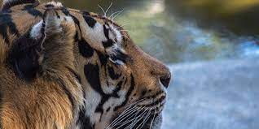

"O tigre é um mamífero carnívoro que faz parte da família dos felídeos e é considerado o maior felino do mundo. É um animal que apresenta hábito solitário e se alimenta, principalmente, de ungulados (animais que possuem casco). Para capturar suas presas, utiliza a técnica de se aproximar delas sem que seja percebido, movendo-se de maneira silenciosa. É um animail ágil, forte e que apresenta olfato apurado e boa visão. Destaca-se por ter um padrão de pelagem típico, com pelos laranja-avermelhados e linhas pretas dispostas ao longo de seu corpo. Atualmente, são reconhecidas seis subespécies de tigres viventes." Veja mais sobre "Tigre" em: https://brasilescola.uol.com.br/animais/tigre.htm